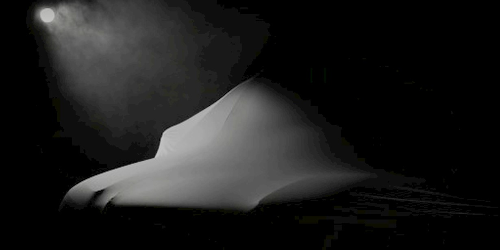

for DC Advanced UX Team.Vivi · Yohan · Libby · Lim Jisu · Katey · Anna
Back Issue

Cockpit
Volvo: buttons return, each with its own shape
At its strategy update in Stockholm on September 17, Volvo confirmed physical controls are coming back. Thomas Ingenlath, returning as Chief Design Officer, promised not 'rows and rows of buttons' but tactile controls where each one has a unique shape and way of interacting; details come with a covered show car due in spring 2027 for the brand's 100th anniversary. The same plan lists 13 new models by 2030, seven for the West on SPA2/SPA3 and six for China, with wagons and sedans back on the table.
볼보가 9월 17일 스톡홀름 전략 발표에서 물리 버튼의 귀환을 확인했다. 최고디자인책임자로 복귀한 토마스 잉겐라트는 '버튼을 줄줄이 늘어놓지는 않겠다'며 버튼마다 고유한 형태와 조작 방식을 갖게 하겠다고 말했다. 세부는 브랜드 100주년을 맞는 2027년 봄 쇼카에서 공개된다. 2030년까지 신모델 13종을 내놓으며 7종은 SPA2/SPA3 기반으로 서구 시장에, 6종은 중국에 배정된다.
Volkswagen revealed the ID.3 GTI this week: 322 hp (240 kW) and 545 Nm to the rear wheels, 0–100 km/h in 5.6 s, the most powerful GTI yet and the first driven from the back; a 79 kWh pack gives up to 601 km WLTP. Inside, physical buttons return beneath the 12.9-inch infotainment screen and on the steering wheel, whose 12 o'clock stripe lines up with a red band across the dash. Red-and-white tartan seats are back after the GTX skipped them, and GTI mode turns the ambient light red, swaps the 10-inch cluster graphics and adds launch control. Pre-sales open in early 2027.
大众本周发布ID.3 GTI：后轮驱动，322马力（240 kW）、545 N·m，0–100 km/h 5.6秒，是史上最强也是首款后驱GTI，79 kWh电池WLTP续航601 km。座舱里，12.9英寸中控屏下方和方向盘上重新装回实体按键，方向盘12点位红标与仪表台红色饰带对齐；GTX省掉的红白格纹座椅回归，GTI模式会把氛围灯切成红色、切换10英寸仪表画面并开启弹射起步。2027年初开启预售。
폭스바겐이 이번 주 ID.3 GTI를 공개했다. 후륜에 322마력(240 kW), 545 Nm를 보내 0–100 km/h 5.6초로, 역대 가장 강하고 처음으로 뒷바퀴를 굴리는 GTI다. 79 kWh 배터리로 WLTP 601 km를 간다. 실내에는 12.9인치 화면 아래와 스티어링 휠에 물리 버튼이 돌아왔고, 휠 12시 방향 빨간 띠는 대시보드의 빨간 밴드와 맞물린다. GTX가 뺐던 타탄 시트가 복귀했으며, GTI 모드는 앰비언트 라이트를 빨갛게 바꾸고 10인치 클러스터 그래픽을 교체한다. 2027년 초 사전 판매다.
Snap opened pre-orders for Specs on September 16: standalone AR glasses at $2,195 with a $200 refundable deposit, shipping this fall in the US, UK and France. Frames are Swiss TR90 polymer in 47 mm (132 g) and 52 mm (136 g) sizes with prescription inserts; two Snapdragon chips drive LCoS displays with a 51-degree field of view, read as a 115-inch screen about three metres away, behind electrochromic lenses that tint in 10 seconds. 'Specs Intelligence' is an anticipatory assistant that also runs on iPhone and Mac; launch partners include Shopify, the NBA, HBO Max, Spotify and Tripadvisor.
스냅이 9월 16일 Specs 사전 주문을 열었다. 단독 구동 AR 안경으로 2,195달러(환불 가능한 보증금 200달러)이며 올가을 미국·영국·프랑스에서 출하된다. 프레임은 스위스 TR90 폴리머로 47 mm(132 g)와 52 mm(136 g) 두 사이즈이고 도수 인서트를 지원한다. 스냅드래곤 칩 두 개가 51도 시야각의 LCoS 디스플레이를 구동해 약 3 m 앞 115인치 화면처럼 보이고, 전기변색 렌즈는 10초 만에 어두워진다. 'Specs Intelligence'는 아이폰과 맥에서도 도는 예측형 어시스턴트이며, 쇼피파이, NBA, HBO 맥스, 스포티파이, 트립어드바이저가 출시 파트너다.
MoN Takanawa: Pentagram's spiral spells M, O and N
Pentagram's identity for MoN Takanawa, the Museum of Narratives that opened in March inside Kengo Kuma's Takanawa Gateway City in Tokyo, is back in view after Brand New's review this week. Partners Luke Powell and Jody Hudson-Powell built everything from one spiral: it echoes the building's 'spiral oasis' section, resolves into the letters M, O and N, and becomes the layout logic for posters, signage, merchandise and motion, where spirals and bars morph and bleed. Colours are a red sun, blue water and green land; type is Dinamo's Walter Neue, giving Japanese and English equal weight down to wayfinding.
펜타그램이 도쿄 다카나와 게이트웨이 시티(구마 겐고 설계) 안에 3월 개관한 '내러티브 뮤지엄' MoN 다카나와를 위해 만든 아이덴티티가 이번 주 브랜드 뉴의 리뷰로 다시 주목받았다. 파트너 루크 파월과 조디 허드슨 파월은 나선 하나로 전체 시스템을 세웠다. 나선은 건물의 '나선형 오아시스' 단면을 닮았고 M, O, N으로 읽히며 포스터·사이니지·굿즈·모션의 레이아웃 논리가 된다. 색은 붉은 해, 푸른 물, 초록 땅에서 왔고 서체는 디나모의 Walter Neue로 일본어와 영어에 같은 무게를 줬다.
BYD launched the 2027 Atto 2 (Yuan UP in China) on September 17 from 74,800 yuan, about $11,150. The 4,310 mm crossover keeps the 12.8-inch rotating centre screen and 8.8-inch driver display on DiLink 100, but the console toggle is gone: gear selection moves to a steering-column stalk behind a redesigned two-spoke wheel, freeing the console for a 50 W air-cooled wireless charger. Four-zone voice recognition, an NFC phone key and DiPilot C highway navigation are standard; a new 51.13 kWh Blade pack lifts range to 501 km CLTC.
BYD가 9월 17일 2027년형 아토 2(중국명 위안 UP)를 74,800위안, 약 11,150달러부터 출시했다. 전장 4,310 mm 크로스오버는 DiLink 100의 12.8인치 회전형 센터 스크린과 8.8인치 계기판을 유지하지만 센터 콘솔의 기어 토글은 사라졌다. 변속은 새 2스포크 휠 뒤 컬럼 스토크로 옮겨졌고 비워진 자리에는 50 W 공랭식 무선 충전기가 들어갔다. 4존 음성 인식, NFC 폰 키, 고속도로 내비 주행 DiPilot C가 기본이며 새 51.13 kWh 블레이드 배터리로 CLTC 501 km를 간다.
Hublot unveiled the Classic Fusion Balloon Dog in New York on September 16 with Jeff Koons: a 42 mm, 11 mm-thick case on which every surface bulges as if inflated. The crystal domes, the dial swells, the crown is shaped like a balloon's tie-off valve, the screw heads are rounded, a rubber dog tail sticks out at 10:30 and even the tungsten rotor is puffed. Three runs of 200 pieces, in mirror-polished steel, red anodised aluminium and blue anodised aluminium, on the HUB1710 automatic at $25,100. Alongside it: the MP-14 Origin, a $488,000 sapphire tourbillon.
위블로가 9월 16일 뉴욕에서 제프 쿤스와 함께 클래식 퓨전 벌룬 독을 공개했다. 42 mm, 두께 11 mm 케이스의 모든 면이 바람을 넣은 듯 부풀어 있다. 크리스털은 돔형으로 솟고 다이얼은 불룩하며, 크라운은 풍선 매듭 밸브 모양이고 10시 30분 위치에는 고무 강아지 꼬리가 튀어나온다. 텅스텐 로터까지 부풀렸다. 미러 폴리시 스틸, 빨강과 파랑 아노다이즈드 알루미늄 세 가지가 각 200개 한정이며 HUB1710 자동 무브먼트에 25,100달러다. 48만 8,000달러짜리 사파이어 투르비용 MP-14 오리진도 함께 나왔다.
BYD's Fang Cheng Bao put the Formula S coupé and Formula S GT shooting brake on sale on September 16 at 189,900–229,900 and 219,900–239,900 yuan, the production follow-up to the GT covered here at its reveal. Both share a 2,960 mm wheelbase; Cd is 0.22 for the 5,060 mm coupé and 0.25 for the GT. The cabin leads with a 26-inch AR head-up display, Devialet audio and zero-gravity seats, plus an open-ecosystem idea: PIN, magnetic and threaded hardware interfaces so owners can bolt on ambient lights, karaoke kit and other accessories. God's Eye B with LiDAR handles highway and urban NOA; up to 657 hp and 900 km CLTC.
比亚迪方程豹9月16日上市Formula S轿跑和Formula S GT猎装版，售价分别为18.99万–22.99万元和21.99万–23.99万元，是此前亮相的GT的量产后续。两车轴距同为2,960 mm，5,060 mm的轿跑风阻0.22，GT为0.25。座舱以26英寸AR-HUD、帝瓦雷音响和零重力座椅为主，还有开放生态：PIN、磁吸和螺纹三种硬件接口，车主可自行加装氛围灯、K歌设备等配件。天神之眼B支持高速与城市NOA；最高657马力、CLTC续航900 km。
BYD의 팡청바오가 9월 16일 포뮬러 S 쿠페와 포뮬러 S GT 슈팅브레이크를 각각 18만 9,900~22만 9,900위안, 21만 9,900~23만 9,900위안에 출시했다. 앞서 공개 때 다룬 GT의 양산 후속이다. 휠베이스는 2,960 mm로 같고 5,060 mm 쿠페는 Cd 0.22, GT는 0.25다. 실내는 26인치 AR 헤드업 디스플레이와 드비알레 오디오, 제로 그래비티 시트가 중심이며, PIN·마그네틱·나사식 인터페이스로 앰비언트 라이트나 노래방 장비를 직접 달 수 있는 개방형 생태계를 내세운다. 갓즈 아이 B가 고속·도심 NOA를 맡고 최고 657마력, CLTC 900 km다.
Royal Enfield's electric sub-brand opened orders for the Flying Flea C6 in Paris, Barcelona, Rome, Berlin and London on September 17 at €5,990 or £5,300, with deliveries in October; US pricing follows later. The 124 kg city bike keeps its forged-aluminium frame, girder front end and magnesium battery case, adds belt drive, lean-sensitive ABS and traction control and a connected electronics package. The 3.91 kWh pack gives 104 km WMTC and charges 20–80% in about 65 minutes; the 15.4 kW motor tops out at 115 km/h.
로열 엔필드의 전동 서브 브랜드가 9월 17일 파리, 바르셀로나, 로마, 베를린, 런던에서 플라잉 플리 C6 주문을 받기 시작했다. 5,990유로 또는 5,300파운드이고 10월에 인도되며 미국 가격은 추후 공개된다. 124 kg의 도심용 바이크는 단조 알루미늄 프레임, 거더식 프런트 서스펜션, 마그네슘 배터리 케이스를 유지하고 벨트 드라이브, 코너링 ABS, 커넥티드 전장 패키지를 갖췄다. 3.91 kWh 배터리로 WMTC 104 km를 가고 20–80% 충전에 약 65분, 15.4 kW 모터로 최고 115 km/h다.
Meta glasses: ten surreal launch films from Tendril
Builders Club and Toronto's Tendril made ten built-for-social launch films for Meta's new AI glasses, a series Tendril titles 'Little Wonders'. Creative director Jonas Hegi and director Yeseong Kim set the glasses in a modular 3D universe where domestic objects meet high fashion: soft gradients, pearlescent textures and one self-contained visual gag per film, fast-paced and a little unexpected, so the product reads as fashion rather than hardware. Worth studying for how a wearable is sold on wit and surface rather than a feature list.
빌더스 클럽과 토론토의 텐드릴이 메타의 새 AI 안경을 위해 소셜용 론칭 필름 열 편을 만들었다. 텐드릴은 이 시리즈를 '리틀 원더스'라고 부른다. 크리에이티브 디렉터 요나스 헤기와 감독 김예성은 안경을 가정용품과 하이패션이 만나는 모듈형 3D 세계에 놓았다. 부드러운 그러데이션과 진주빛 질감, 편마다 하나씩 완결되는 시각적 개그가 빠르고 조금 엉뚱하게 이어지며 제품을 하드웨어가 아닌 패션으로 읽히게 한다. 웨어러블을 기능 목록 대신 위트와 표면으로 파는 방식을 볼 만하다.
Galaxy Zhanjian 700: five screens, a fridge, 1,113 hp
Geely's first dedicated off-roader, the Galaxy Zhanjian 700, opened pre-orders on September 16 at 199,800–389,800 yuan and logged 43,900 in an hour, 10,000 of them in the first nine minutes. The 5,085 mm SUV runs a Thor EM-T hybrid with 1.5T or 2.0T engines and three motors for up to 830 kW (1,113 hp), 0–100 km/h in 3.95 s and 305 km of electric range from a 47.14 kWh CATL LFP pack. Inside: a five-screen interactive system, an 18.5-litre dual-opening fridge and 14-point massage in both front seats; an 'AI all-terrain digital chassis' offers 17 driving modes.
吉利首款硬派越野SUV银河战舰700于9月16日开启预售，售价19.98万–38.98万元，一小时订单43,900台，前9分钟即破万。车长5,085 mm，搭载雷神EM-T混动，1.5T或2.0T发动机配三电机，最高830 kW（1,113马力），0–100 km/h 3.95秒，47.14 kWh宁德时代磷酸铁锂电池纯电续航305 km。座舱配五屏互联、18.5升双开门冰箱和前排双座14点按摩，“AI全地形数字底盘”提供17种驾驶模式。
지리의 첫 정통 오프로더 갤럭시 잔젠 700이 9월 16일 19만 9,800~38만 9,800위안에 사전 예약을 열어 한 시간 만에 43,900대를, 첫 9분에 1만 대를 받았다. 전장 5,085 mm SUV는 1.5T 또는 2.0T 엔진과 모터 세 개의 토르 EM-T 하이브리드로 최고 830 kW(1,113마력), 0–100 km/h 3.95초를 내고 47.14 kWh CATL LFP 배터리로 전기 주행 305 km를 간다. 실내에는 다섯 화면 시스템, 18.5 L 양문형 냉장고, 앞좌석 14포인트 마사지가 들어가고 'AI 전지형 디지털 섀시'가 17가지 주행 모드를 제공한다.
A report in China says Maserati will build its next two EVs, a mid-to-large SUV above the Grecale Folgore and a large GT likely to come first, on Huawei's HIMA platform: HarmonyOS cockpit, Qiankun ADS driver assistance and Huawei electric drive. Bodies would come from JAC's Maextro plant in Hefei and ship semi-knocked-down to Italy for final assembly, interiors and chassis tuning; the cars would be badged Maextro in China and Maserati abroad, starting in the Middle East, Italy, France and Germany. It would put a Huawei-designed UI behind the trident.
중국 보도에 따르면 마세라티는 다음 전기차 두 종, 그레칼레 폴고레 위의 중대형 SUV와 먼저 나올 가능성이 큰 대형 GT를 화웨이 HIMA 플랫폼 위에 만든다. 하모니OS 콕핏, 첸쿤 ADS 주행 보조, 화웨이 전동 구동계가 들어간다. 차체는 JAC의 허페이 마에스트로 공장에서 만들어 반조립 상태로 이탈리아로 보내 최종 조립과 실내, 섀시 튜닝을 마친다. 중국에서는 마에스트로, 해외에서는 마세라티 배지를 달고 중동, 이탈리아, 프랑스, 독일부터 판다. 삼지창 뒤에 화웨이가 설계한 UI가 놓이는 셈이다.
SIVO.GO: on-device sound alerts win Dyson's UK award
Gargi Agrawalla, a Loughborough product-design graduate born profoundly deaf, is the UK winner of the James Dyson Award 2026 for SIVO.GO, a portable safety alert for deaf and hard-of-hearing travellers. A handheld unit on a lanyard or clip carries an Arduino Nano 33 BLE Sense, a MEMS microphone, an OLED screen, RGB LEDs and a vibration motor; a TinyML model trained on 500-plus labelled samples recognises fire alarms and doorbells on-device, no Wi-Fi or cloud, while a vibration sensor catches knocks and door movement. Alerts arrive as colour-coded light, a screen symbol and adjustable haptics. The global top 20 is named October 14.
拉夫堡大学产品设计毕业生Gargi Agrawalla天生重度失聪，凭SIVO.GO获得2026年James Dyson Award英国区冠军，这是一款为聋人与听障旅行者设计的便携安全提醒器。挂绳或夹扣式的手持主机内置Arduino Nano 33 BLE Sense、MEMS麦克风、OLED屏、RGB灯和振动马达；用500多条标注音频训练的TinyML模型可在本地识别火警和门铃，不需要Wi-Fi或云端，另有振动传感器捕捉敲门和门的动静。提醒以彩色灯光、屏幕符号和可调振动呈现。全球20强10月14日公布。
선천적으로 심도 난청인 러프버러대 제품디자인 졸업생 가르기 아그라왈라가 청각장애 여행자를 위한 휴대용 안전 알림 장치 SIVO.GO로 2026 제임스 다이슨 어워드 영국 우승자가 됐다. 목걸이나 클립으로 다는 핸드헬드 유닛에 아두이노 나노 33 BLE 센스, MEMS 마이크, OLED 화면, RGB LED, 진동 모터가 들어간다. 500개 넘는 음원으로 학습한 TinyML 모델이 와이파이나 클라우드 없이 기기 안에서 화재 경보와 초인종을 인식하고, 진동 센서가 노크와 문 움직임을 잡는다. 알림은 색으로 구분된 빛, 화면 기호, 조절 가능한 진동으로 온다. 글로벌 톱 20은 10월 14일 발표된다.
Rimowa × Faber-Castell: a $3,100 case for 120 pencils
Rimowa released a limited Artist Case with Faber-Castell on September 17: the grooved anodised-aluminium shell, high-gloss corners and TSA locks of its luggage, scaled down around a two-level tray that holds 120 Polychromos colour pencils, custom grooved 2B Grip graphite pencils, a platinum-plated sharpener and an eraser, both Rimowa-branded. The leather handle is Faber-Castell green, the colour of a firm founded in 1761. $3,100, at Rimowa stores and online worldwide and through selected Faber-Castell retailers in Germany, Austria, France and Italy. Luggage grammar applied to a pencil tin.
리모와가 9월 17일 파버카스텔과 한정판 아티스트 케이스를 내놓았다. 여행가방의 홈 파인 아노다이즈드 알루미늄 셸, 고광택 코너, TSA 잠금장치를 2단 트레이 크기로 줄여 폴리크로모스 색연필 120자루, 홈을 판 맞춤 2B 그립 흑연 연필, 리모와 로고가 들어간 백금 도금 연필깎이와 지우개를 담는다. 가죽 손잡이는 1761년에 세워진 파버카스텔의 상징색인 초록이다. 3,100달러이며 전 세계 리모와 매장과 온라인, 독일·오스트리아·프랑스·이탈리아의 일부 파버카스텔 매장에서 판다. 여행가방의 문법을 연필통에 적용했다.
Banana Art Book: 100 artists, set in Banana Grotesk
Swedish duo Studio Trikken (John Schulisch and Johan Elmehag) have self-published the Banana Art Book, 192 pages in which more than 100 artists draw, paint and sculpt the same fruit, 'clown, accountant and dictator' in Elmehag's words. The design plays it straight-faced: text set in MNKY Type's Banana Grotesk, an index titled Yellow Pages, lines of type that curve like the fruit, and a custom freight box modelled on banana packaging. Every page was meant to differ in style and technique. 'There is huge anxiety in perfection,' says Elmehag; the book is their answer.
瑞典双人组Studio Trikken（John Schulisch与Johan Elmehag）自费出版了《Banana Art Book》：192页，100多位艺术家画、涂、塑同一种水果，用Elmehag的话说，它是“小丑、会计和独裁者”。设计一本正经：正文用MNKY Type的Banana Grotesk，索引取名“黄页”，部分文字像香蕉一样弯曲排列，外箱仿照香蕉运输纸箱定制。每一页都刻意在风格与技法上不同。Elmehag说“完美里藏着巨大的焦虑”，这本书就是回应。
스웨덴 듀오 스튜디오 트리켄(욘 슐리슈와 요한 엘메하그)이 '바나나 아트 북'을 자비 출판했다. 192쪽에 걸쳐 100명 넘는 작가가 같은 과일을 그리고 칠하고 빚었다. 엘메하그의 말로는 바나나는 '광대이자 회계사이자 독재자'다. 디자인은 짐짓 진지하다. 본문은 MNKY 타입의 Banana Grotesk로 짜고 색인 이름은 '옐로 페이지'이며, 몇몇 페이지에서는 글줄이 바나나처럼 휜다. 배송 상자는 바나나 포장 상자를 본떴다. 엘메하그는 '완벽에는 거대한 불안이 있다'고 말하고, 이 책이 그 답이라고 했다.
Designer Lennart Baramsky's REV-1 concept picks up where Alfred Böning's 1934 BMW R7 left off: that Art Deco one-off wrapped its mechanicals in pressed steel and was shelved until its 2005 rediscovery. REV-1 does it in hand-formed aluminium with almost no shut lines, cutting 'windows' through the body instead of bolting parts onto a frame. There is no telescopic fork; a linkage of rod ends, a rocker arm and a coilover lies flat inside the shell, in the spirit of hub-centre bikes like the Bimota Tesi. Power is a hydrogen fuel-cell core rated at a concept-stage 450 kW.
디자이너 레나르트 바람스키의 REV-1 콘셉트는 알프레드 뵈닝의 1934년 BMW R7에서 이어진다. 그 아르데코 원오프는 기계부를 프레스 강판으로 감쌌다가 2005년에야 재발견됐다. REV-1은 이를 손으로 성형한 알루미늄으로 다시 한다. 분할선이 거의 없고 프레임에 부품을 매다는 대신 차체에 '창'을 뚫었다. 텔레스코픽 포크는 없다. 로드 엔드, 로커 암, 코일오버로 이뤄진 링크가 셸 안에 납작하게 누워 있어 비모타 테시 같은 허브 센터 바이크를 떠올리게 한다. 동력은 콘셉트 기준 450 kW의 수소 연료전지 코어다.
Core77: why the aero look faded and why EVs revive it
Core77 traces the streamlined look that peaked around 1988–1990, when the Honda CRX, Ford Thunderbird and Mazda RX-7 all posted Cd 0.32, and asks why it vanished. The answer is the SUV: the Ford Explorer (Cd 0.43) was the best-selling SUV of the 1990s and the 2002 Honda CR-V hit 0.45, size and perceived safety trumping drag. It is returning through range anxiety: a Tesla Model Y sits at 0.22, the 2023 CR-V at 0.33, and VW's Mission Efficiency concept at 0.158 claims almost double a Polo's distance on the same energy. A short read for anyone sketching the next EV silhouette.
코어77이 1988~1990년 무렵 정점에 이른 유선형 스타일을 되짚었다. 혼다 CRX, 포드 선더버드, 마쓰다 RX-7이 모두 Cd 0.32를 찍던 시절이다. 왜 사라졌나. 답은 SUV다. 포드 익스플로러(Cd 0.43)가 1990년대 최다 판매 SUV였고 2002년형 혼다 CR-V는 0.45까지 갔다. 크기와 안전하다는 느낌이 공기저항을 눌렀다. 이제 주행거리 불안이 그것을 되돌린다. 테슬라 모델 Y는 0.22, 2023년형 CR-V는 0.33이고, 폭스바겐 미션 이피션시 콘셉트는 0.158로 같은 에너지로 폴로의 거의 두 배를 간다고 주장한다.